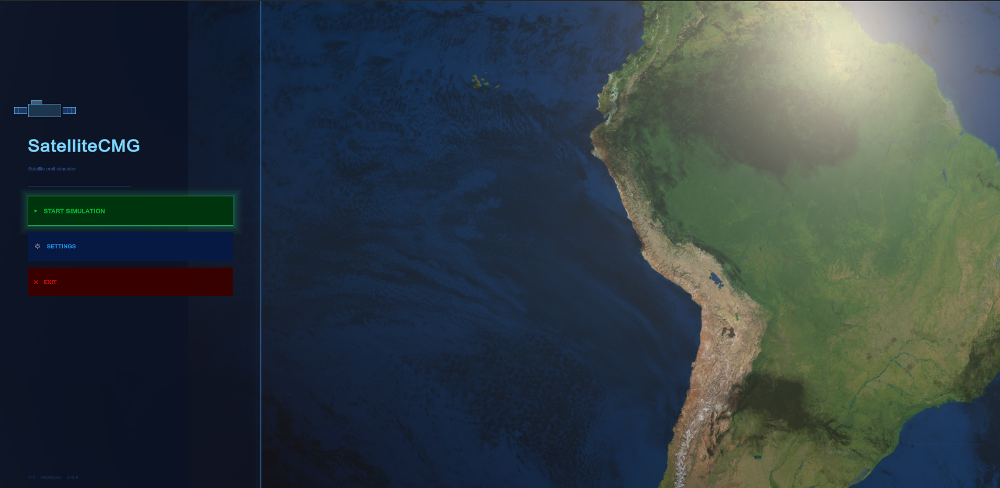
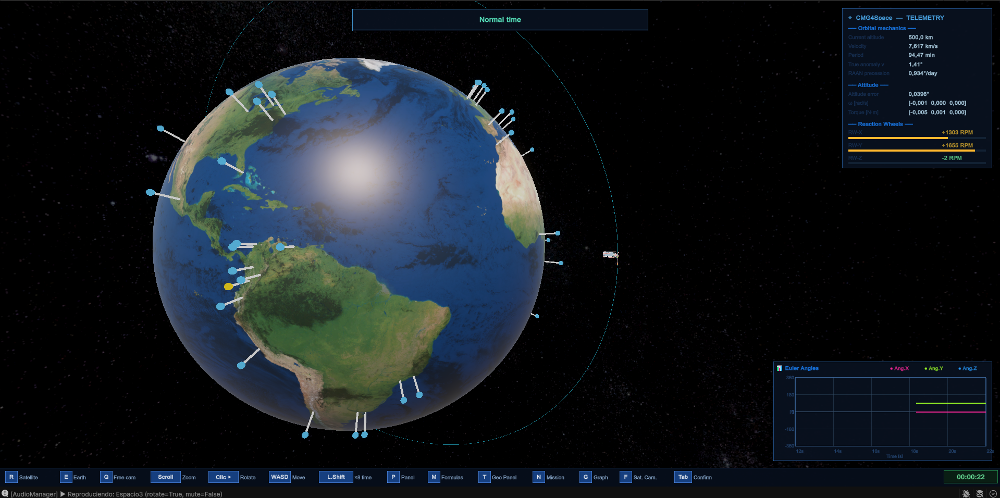

Aplicativo interactivo de simulación orbital en Unity 6 URP. Física orbital de alta fidelidad con integrador RK4, control de actitud PD, geo-targeting sobre 47 ciudades y planificación de misión en tiempo real.
SatelliteCMG es una aplicación de simulación orbital para un satélite CubeSat 6U desarrollada en Unity 6 con el pipeline URP. No es una visualización estática — es física orbital real: el satélite orbita la Tierra con perturbaciones J2 y arrastre atmosférico, calculadas cuadro a cuadro con un integrador Runge-Kutta de orden 4.
El aplicativo nació como parte del proyecto CMG4Space: una plataforma para visualizar, experimentar y aprender mecánica orbital de forma interactiva. El usuario puede editar parámetros orbitales en tiempo real, cambiar la velocidad de simulación hasta ×200, y ver cómo cada cambio afecta inmediatamente la trayectoria y la telemetría del satélite.
Más que una demo técnica, SatelliteCMG es una herramienta educativa y de exploración: podés buscar la próxima pasada del satélite sobre Cali, configurar la órbita heliosíncrona perfecta o simplemente observar cómo el achatamiento polar de la Tierra precesa el nodo ascendente día a día.
↑ Clic en cualquier imagen para ver en pantalla completa
Un recorrido desde el menú principal hasta la simulación activa: navegación por las pantallas, edición de parámetros orbitales en tiempo real, geo-targeting sobre ciudades y el sistema de cálculo de pasadas con Fast-Forward.
El proyecto se organiza en 6 módulos bien delimitados: Orbital (física), Geo (geografía), Attitude (control), Camera, UI y sistemas transversales. Cada módulo tiene responsabilidades claras y dependencias explícitas.
| Capa / Tool | Detalle |
|---|---|
| Motor | Unity 6 — Universal Render Pipeline (URP) |
| Lenguaje | C# 6+ (CodeDom) / C# 12 con Roslyn |
| Física orbital | Integrador RK4 subdividido, doble precisión, perturbaciones J2 + drag atmosférico |
| UI | IMGUI (OnGUI) 100% custom, responsive base 1920×1080 |
| Audio | AudioSource + AudioClip · 3 pistas música + 2 SFX |
| Localización | Sistema Loc.cs estático, 100+ claves ES/EN, PlayerPrefs |
| Geo / Overpass | Coroutine asíncrona RK4 · propagación 2 días por adelantado |
| Plataforma | Windows / PC |